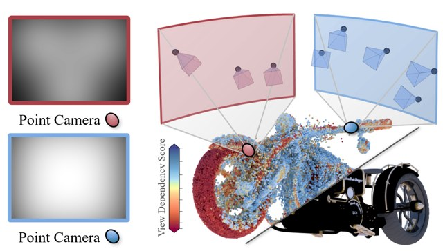
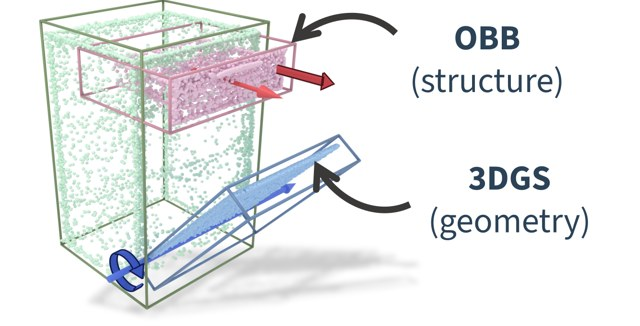
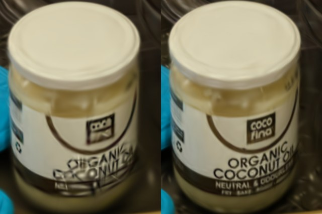

Gahye Lee
Summer roses along the Hyeongsan River — one of my favorite places in Pohang.
About
I am a Ph.D. student in the Computer Graphics Laboratory at POSTECH, advised by Prof. Seungyong Lee. I’m interested in identifying practical bottlenecks and finding simple, intuitive ways to address them. My recent work takes an inverse-problem approach: designing representations of the underlying scene or system and optimizing them to explain observed data. My research interests include simulation-ready 3D reconstruction, 3D Gaussian Splatting, and physical AI.
I’m exploring what to do next after my Ph.D. (expected 2027), and open to opportunities in academia, industry, or anything else that sounds interesting.
Publications


